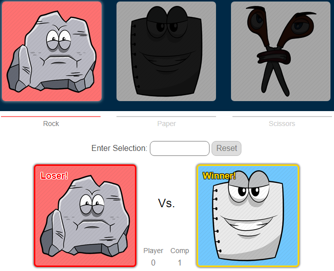

Version one at least - it's looking pretty static right now.
Some things of note:
- CSS Variables could be so useful. Gotta use them in the future
- I was reminded of the days of PHP where you could set the root directory to a variable and use that to reference all your stylesheets / files instead of manually typing out paths. I know you can do ~/ to start from the root, but the root is not the same on localhost and web host. Maybe there's some other trick I need to figure out.
- Learning to load content with JS and some backend code (Node?) sounds like it's going to be great as well.
- Gotta make this look more professional at some point in the future.. maybe start a to-do list.
Completed this project via The Odin Project.

(Click image to try it)
I had a bunch more ideas for features to add, like creating different layers that get swapped via a queue so you could mix colors / undo things. Ultimately I learned some of the limits of JS when it comes to styling divs based on mouseover - much more than a seven-bit grid (need to find a font with numbers or pay for this one haha) of divs and it starts to get pretty laggy (at least on my computer).
Compared to the Rock-Paper-Scissors project, there were way fewer visual elements, and as a result way fewer hours / lines of code used for this one. Lesson learned for the future :).
Completed this project via The Odin Project.
(Click image to try it)
Really basic app, but I was able to test a lot of different ideas, which resulted in some great leassons learned:
Levenshtein Distance
I used this to match what the user types against the words 'rock', 'paper' and 'scissors'. Originally this was a console based project, so I figured it would be a cool opportunity to practice something like that
It's a cool algorithm for measuring the distane between two strings. It has a nice dynamic programming algorithm (example), that can be tweaked depending on how you want to make the comparison. I think I read something like this is used in spell checkers.
The gist:
- Make a two-dimensional matrix with word A on top and word B on the left
- Add one point (or whatever you want) if you have to delete an extra letter from word A
- Add one point (or whatever you want) if you have to change a letter from word A to word B
- Add zero points if the letter is present in both
- Find the minimum sum to get from word A to word B
Asynchronous Javascript
Ok I spent way too much time on this one. Wwhen the computer makes its character selection, I originally wanted it to scroll through the different character protraits by turning the three classes on and off... I thought this would be a good opporunity to use setTimeout, but did not realize those functions are not run in order, only out of order with the regular code.
My next attempt was to use a promise.then().then() or something along those loines, but didn't have any better luck. I'm pretty confident that was one of the viable methods, but I'll come back to this later.
Ultimately I just made the character highlight move from the player to the computer and wait something close to a second before displaying both characters and the result of each round. Makes it a little more dramatic I guess?
Clean Code
From this awesome article. I also bought the clean code book and hope to read it at some point
I got to practice and see the benefits of some clean code concepts. Though I don't think my code is clean at all there were a few concepts that made it way better than it would have been otherwise.
- Function arguments (two or fewer ideally) - The idea is to greatly reduce the complexity when testing. I did my best on this one (I think I achieved it?). If I thought I needed more than two arguments, I tried to find another way to do it. Though there were a few methods that allowed any number of arguments because it looped through hopefuly identicle selectors.
- Functions should do one thing - This one I really noticed the benefits of. There were several methods that I reused over and over again in different contexts, and it felt so nice when I didn't feel like I needed to change anything.
- Function names should say what they do - I had to go back a few times and rename methods because I had a hard time coming up with the right descriptions, but this helped a lot when I had to go back and figure out what my code was doing.
- Avoid mentail mapping - Instead of using letters for variables, I tried to name the variables so I could figure out what they were for when I went back
- Make objects have private members - Uh, I briefly attempted to do this, but it's on my to-do list for future projects.
There were others, but I think this is a good start!